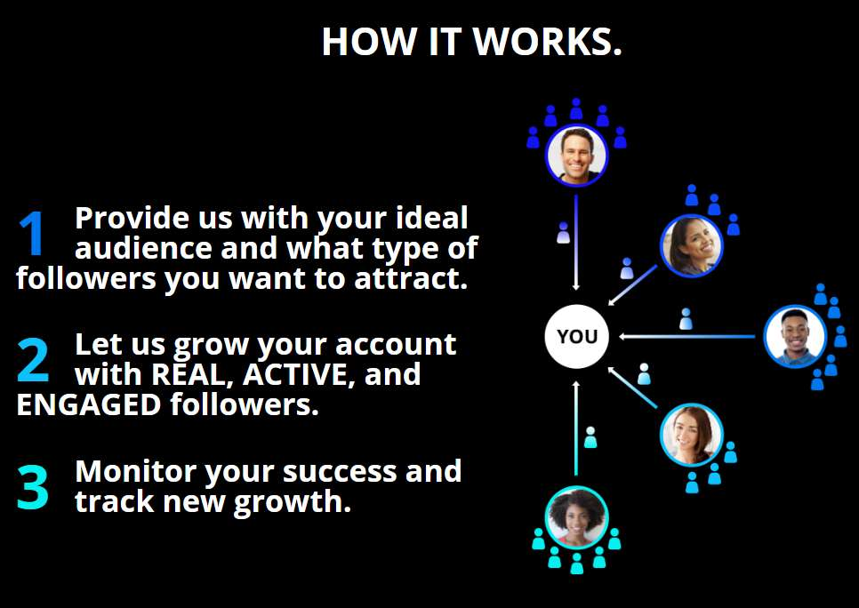
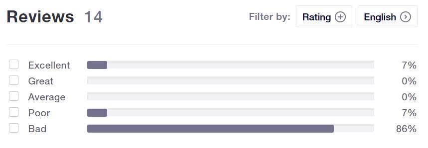
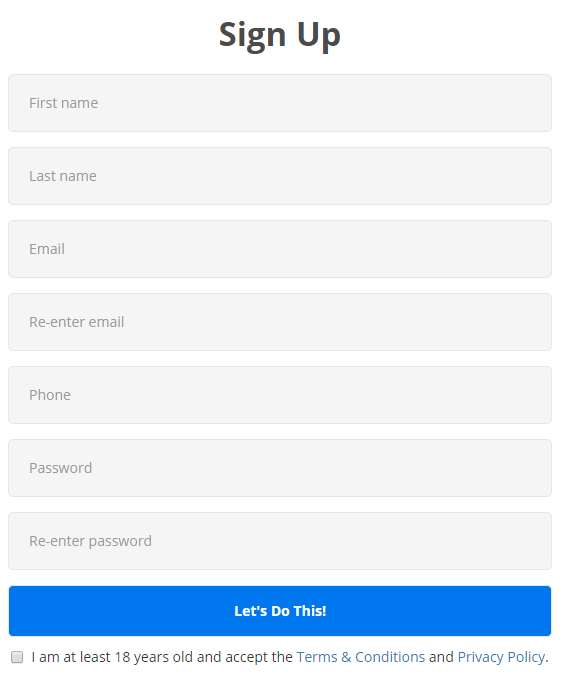

So you’re looking for a tool that can increase your audience on Instagram and you came across Stim Social.
You’re probably wondering if Stim Social is worth it. Does it really work? Is it safe? Does it include any unique features?
To save you the hassle of trying out the tool, I made an account, linked it to a test Instagram profile, and played around with it for a few days.
In this Stim Social review, I’ll share my experience with you. When you’re done, you’ll know exactly what to expect from this tool.
Let’s start.
What is Stim Social?

There are many different types of Instagram automation tools, such as full-on bots, tools that only perform one action, and ones that link you with social media marketers. Where does Stim Social fit in?
Stim Social is an Instagram bot but it only automates a handful of tasks. One of the headlines on their website promises to send real, active, and engaged followers to your Instagram.
It can automate the following actions:
- Follow
- Unfollow
- Like (called Engagement Like on their platform)
They claim users can rapidly build a legitimate audience on Instagram by automating these three tasks. On top of that, the tool also provides you with detailed analytics, so you can watch your account growth in real-time.
That’s what most of these Instagram bots promise. Is Stim Social the one that really works?
Stim Social’s Reputation Online
Bear in mind, Stim Social is not the most popular Instagram tool.
There aren’t so many reviews about it online. On the other hand, there is an unclaimed Trust Pilot page that – unfortunately – has mostly negative reviews on it. Right now it has 14 reviews, and 86% of them are bad.
Look:

That’s not a great sign. Especially considering most of the user reviews mention similar downsides, which we’ll discuss in the cons section of this review.
Stim Social’s Features
You’re probably wondering if this tool has the features you need to boost your audience growth.
If you visited their webpage, then you have probably noticed they’re suspiciously vague about the included features. In fact, they’re vague about the price too.
After playing around with the free trial, I discovered most of the tool’s features. What it boils down to are three core services: auto-follow, auto unfollow, and engagement likes.
Unfortunately, I wasn’t that impressed. Most of the features are the same as found on other bots, and lacking in several ways too.
Nevertheless, let’s run through them.
1 – Auto Follow & Targets
Most Instagram bots have an auto-follow service, and it’s a rather basic one at this point. Naturally, to start this service, you’ll need to add proper targets first. Stim Social has a decent amount of targets.
For instance:
- Competitor Profiles
- Hashtags
- Location
- Business Accounts
- Gender
- Private Accounts
If you add appropriate targets, the bot shouldn’t have a problem finding accounts to interact with. Most people report their accounts did grow after using the tool for a few days.
2 – Configuring Interaction Limits
Most of these limits are set to default values, but you can adjust them as you see fit. Custom limits are available for the main three actions: following, unfollowing, and liking.
Another filter you can add limits to is called Post Limits which only interacts with users who have a certain number of posts.
3 – Auto Likes
At the moment, Stim Social likes content in two ways; like a user’s most recent post, or like content in your profiles feed at random. You can change the liking service in the settings menu.
The liking service works with the other auto services, using the same targets, and leaves a like on profiles it comes across.
It’s important to keep in mind this service isn’t the highlight of Stim Social’s service, it’s more like an add-on.
4 – Adjust the Speed
On the dashboard, you’ll notice you can change the speed of the services. The problem is the faster speeds are behind a paywall. If you want a faster service, then you’ll have to subscribe to the right plan.
Here are the speeds:
- Fast
- Turbo
- Extreme
We’ll talk about the subscription plans in the pricing section.
5 – Detailed Growth Analytics
One feature that makes this tool stand out from the rest is the detailed reports. There are reports for a couple of things, such as Engagement Reports and Targeting Reports.
These reports show the data you might expect. The engagement report shows the engagement that your last 12 posts receive.
The targeting report can reveal some interesting data. It shows you how each of your individual targets is performing and it also assigns a quality score to the users. The report will also reveal the number of follow-backs you receive, as well as other interactions such as likes and comments.
6 – Clean Feed
Stim Social’s Clean Feed service is only available on Turbo and Extreme memberships. Essentially, what it does is mute the accounts the tool interacts with on your behalf to keep your Instagram feed clean. It’s a useful service. You can also choose to unmute the new followers if you want to view their content too.
7 – Story Views
Another automated service that views the stories of specific accounts or accounts with target parameters. Story Views is useful because the creators of those stories can see your account in their list of story views. It’s another way to send out a “Ping” so to speak.
How Much is Stim Social?
Stim Social has three main subscription plans:
- Fast – $9.95/month
- Turbo – $19.95/month
- Extreme – $29.95/month
There are also a few other add-ons you can choose, such as Engagement Pack and Direct Messages.

What is The Engagement Pack?
While looking at the prices, you have probably noticed the plans on the pricier end have a service called Engagement Pack. The Engagement Pack adds a new service to the mix, an auto-direct message service, and an additional report, called Top Engagers Report.
The auto direct message service supports up to 10 custom written messages, selected at random. And the Top Engager Report shows who your top fans are, so you can better understand your audience. Overall, a useful package.
P.S. Wondering how to organically improve your engagement on Instagram?
Stim Social Pros
Now that you’re familiar with the features, we’ll run through our list of pros.
1 – 5 Day Free Trial 👍
It’s always nice when a tool offers a free trial period. Stim Social offers an entire week of free usage, which is great. No credit card required, and no hidden charges.
2 – Decent Amount of Targets 👍
You can filter accounts based on the three main channels; competition, hashtags, and location. There are also the minor target filters we mentioned earlier. Overall, an okay amount of filters to work with.
3 – Simple User Interface 👍
No need to spend hours configuring individual services and locating the appropriate menus. Stim Social streamlines the user interface to the point where you only need to worry about toggling services. It’s very easy to use. Very user-friendly!
4 – Works Online (No Need to Download and Install) 👍
Another thing I liked about this tool is you don’t have to download and install any software. The bot runs on their servers. You don’t have to worry about hosting anything with virtual private servers and whatnot. It makes things very convenient.
5 – Set Your Own Limits 👍
Think the bot is creating too much activity? Following too many accounts? Head over to the settings and limit the number of actions it can perform. It’s nice to have the option to manually change the limits of various services.
6 – Good Reporting Tools 👍
It’s always nice to see watch your profile’s growth. Stim Social offers a decent number of reporting tools. You can track all kinds of data, from new followers to conversion rates and engagement rates. The add-on Top Engagers report is useful too.
Stim Social Cons
On the flip side, here’s what we didn’t like:
1 – Slow Support 👎
Remember the Trust Pilot ratings from earlier? Most of the people leaving negative reviews for Stim Social mention the support takes a long time to reply to emails.
At the moment, they only offer email support, there’s no hotline or live-chat service. They do have a support page where you can find basic information about the tool but if you need help with a specific issue, it could be a while before you receive a response.
2 – Not Very Transparent 👎
On their website, they like to keep things details very vague. Their pricing page isn’t even public! There’s no mention of the tool being a bot or any of the auto-services either.
The headlines are: “Attract New Followers, Drive Site Traffic, Build Your Influence, Increase Product Sales.”
Very little information on how they are going to do that. The support page provides more information, but I would prefer not to have to browse through their knowledge base to find basic information that should be on the front page of their website.
You get the impression that the company is trying to hide something from the public. There’s also no about page!
3 – Unreliable Performance 👎
Another common complaint about Stim Social is regarding the performance. Many users claim that the tool worked great up until a certain point, and then it stopped working altogether.
Ironically, it seems like the free trial works better than the paid memberships. There are lots of complaints from people who bought a plan only to discover the bot refused to work.
On the other hand, some times people would notice far too much activity on their accounts. It seems like the performance is unreliable and not consistent.
4 – Can’t Use Account When Bot is Active 👎
One thing to remember, that isn’t clear on their website, is you shouldn’t interact with your Instagram account when the bot is active.
This is can be a dealbreaker for social media marketers who always need to keep up with direct messages and other actions that this bot doesn’t automate. But they warn if you use the bot while also connected on your phone, it could lead to a block-out.
Is Stim Social Worth It?
To summarize, while Stim Social provides an okay service, it’s not something we can confidently recommend. I wouldn’t go as far as other reviewers and call it a straight-up scam. It worked well enough for me. But I feel like there are much better alternatives out there. Stim Social felt like a stripped-down version of other Instagram bots.
Stim Social Alternatives
Speaking of alternatives, there are two tools that come to mind.
1 – Kenji
Kenji is a really interesting little Instagram bot that is also great for people on a budget. The bot uses machine learning to create a portfolio of activity based on your interactions.
It has plenty of anti-bot detection filters too, so you don’t need to worry about getting your account blocked from Instagram. Very interesting bot. And it has a free 3-day trial, no credit card required.
2 – Upleap
Upleap is a little pricier, but their service is well worth it. The way Upleap works is it links you to social media managers which perform actions on your accounts, based on your requests.
The great thing about Upleap is it’s not technically a bot. It’s kind of like putting your account in the hands of a professional social media marketer, so the risk of being blocked is minimal. You can also try it for free for three days.
Thanks for taking the time to read this Stim Social review. I hope this review cleared up some of your questions about the software and helped point you in the right direction.
Remember:
Using an Instagram bot always comes with a certain level of risk. When it comes to using Instagram bots you need to use common sense and be careful. Make sure the speed settings are low, at least at first, and don’t spam your account with too many actions.
While Instagram probably won’t straight up ban you if they find out you’re using a bot, they’ll keep asking you to change your password or lock you out, which can be a frustrating experience. Although Instagram bots can save you a lot of time, they are risky, so use at your own risk.